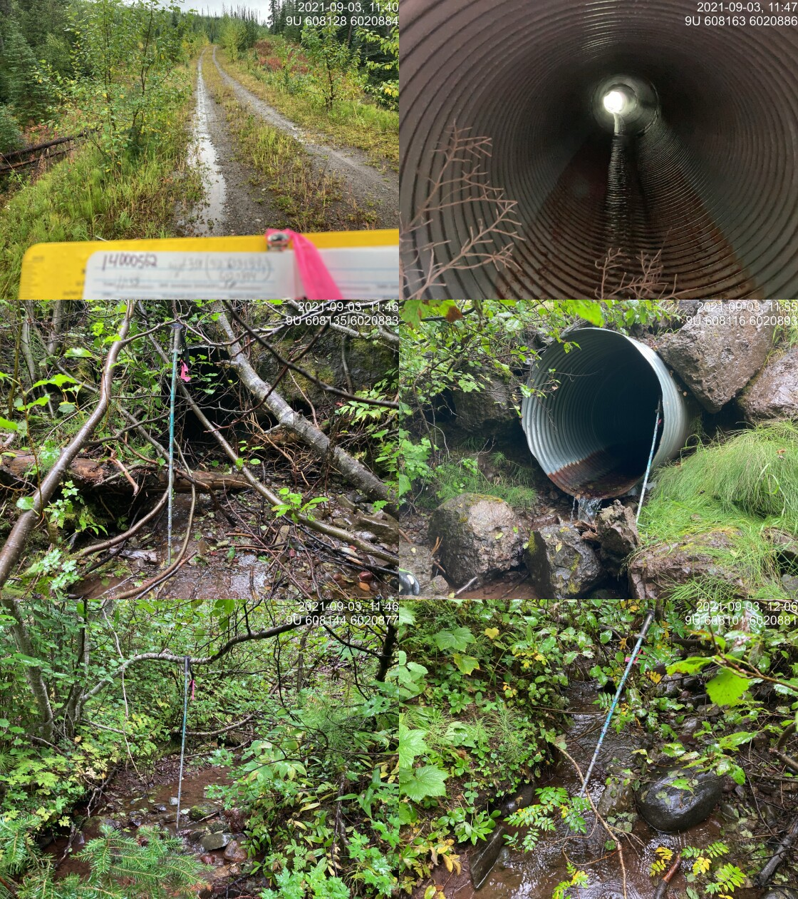

Tributary to Thautil River - 198016 - Appendix
Site Location
PSCIS crossing 198016 is located on Tributary to Thautil River, on Chisholm FSR. There are no other crossings on this tributary. Crossing 198016 is located approximately 700m upstream from the confluence with Thautil River and is the responsibility of West Fraser Timber Company.
Background
#At crossing `r as.character(my_site)`, `r fpr::fpr_my_pscis_info()` is a
# `r fpr::fpr_my_bcfishpass() %>% english::ordinal()` order stream with a
# watershed area upstream of the crossing of approximately
# `r fpr::fpr_my_wshd()`km^2^. The elevation of the watershed ranges from
# a maximum of `r fpr::fpr_my_wshd(col = 'elev_max')`m to
# `r fpr::fpr_my_wshd(col = 'elev_min')`m near the crossing (Table
# \@ref(tab:tab-wshd-198016)). At the time of reporting, there was no fisheries information for areas upstream of crossing
# `r as.character(my_site)`.
fpr::fpr_table_wshd_sum(site_id = my_site) %>%
fpr::fpr_kable(caption_text = paste0('Summary of derived upstream watershed statistics for PSCIS crossing ', my_site, '.'),
footnote_text = 'Elev P60 = Elevation at which 60% of the watershed area is above',
scroll = F)Downstream of Morice Lake, the largest tributary (535km2) is formed by Thautil River and Gosnell Creek. Thautil River maintains relatively high flows throughout the year until the freeze up occurs, typically in November (G. Tamblyn and Croft 2003). In a stream inventory study of the Thautil watershed conducted by David Bustard and Associates Ltd. (1997) in 1996, it was concluded that steelhead, bull trout, and dolly varden were the three predominant species found in the Thautil River. Steelhead and bull trout were utilizing larger channels with an average gradient less than 6%. Dolly varden were the predominant species in smaller tributaries, and were found in streams with a gradient of up to 13%.
PSCIS stream crossing 198016 was ranked as a moderate
priority for follow up by the Society for Ecosystem Restoration in Northern BC based on bcfishpass modelling outputs. A summary of habitat modelling outputs is presented in Table 5.78. A map of the watershed is provided in
map attachment 093L.107.
| Habitat | Potential | Remediation Gain | Remediation Gain (%) |
|---|---|---|---|
| ST Network (km) | 0.7 | 0.3 | 43 |
| ST Lake Reservoir (ha) | 0.0 | 0.0 | – |
| ST Wetland (ha) | 0.0 | 0.0 | – |
| ST Slopeclass03 Waterbodies (km) | 0.0 | 0.0 | – |
| ST Slopeclass03 (km) | 0.0 | 0.0 | – |
| ST Slopeclass05 (km) | 0.0 | 0.0 | – |
| ST Slopeclass08 (km) | 0.4 | 0.0 | 0 |
| ST Spawning (km) | 0.0 | 0.0 | – |
| ST Rearing (km) | 0.0 | 0.0 | – |
| CH Spawning (km) | 0.0 | 0.0 | – |
| CH Rearing (km) | 0.0 | 0.0 | – |
| CO Spawning (km) | 0.0 | 0.0 | – |
| CO Rearing (km) | 0.0 | 0.0 | – |
| CO Rearing (ha) | 0.0 | 0.0 | – |
| SK Spawning (km) | 0.0 | 0.0 | – |
| SK Rearing (km) | 0.0 | 0.0 | – |
| SK Rearing (ha) | 0.0 | 0.0 | – |
| All Spawning (km) | 0.0 | 0.0 | – |
| All Rearing (km) | 0.0 | 0.0 | – |
| All Spawning Rearing (km) | 0.0 | 0.0 | – |
| * Model data is preliminary and subject to adjustments. |
Stream Characteristics at Crossing
At the time of the survey, PSCIS crossing 198016 was un-embedded, non-backwatered and ranked as a barrier to upstream fish passage according to the provincial protocol (MoE 2011b) (Table 5.79). There was low flow through the culvert at the time of survey. It was noted that the boulders found at the outlet could present a barrier to upstream fish migration, depending on life stage and stream flow conditions. Water temperature was 8\(^\circ\)C, pH was 8.1 and conductivity was 155uS/cm.
| Location and Stream Data |
|
Crossing Characteristics | – |
|---|---|---|---|
| Date | 2021-09-03 | Crossing Sub Type | Round Culvert |
| PSCIS ID | 198016 | Diameter (m) | 1.2 |
| External ID | – | Length (m) | 25 |
| Crew | KP | Embedded | No |
| UTM Zone | 9 | Depth Embedded (m) | – |
| Easting | 608138.1 | Resemble Channel | No |
| Northing | 6020911 | Backwatered | No |
| Stream | Tributary to Thautil River | Percent Backwatered | – |
| Road | Chisholm FSR | Fill Depth (m) | 4.5 |
| Road Tenure | West Fraser R05232 | Outlet Drop (m) | 0.19 |
| Channel Width (m) | 1.3 | Outlet Pool Depth (m) | – |
| Stream Slope (%) | 10 | Inlet Drop | Yes |
| Beaver Activity | No | Slope (%) | 5 |
| Habitat Value | Medium | Valley Fill | Deep Fill |
| Final score | 31 | Barrier Result | Barrier |
| Fix type | Replace Structure with Streambed Simulation CBS | Fix Span / Diameter | 3 |
| Photos: From top left clockwise: Road/Site Card, Barrel, Outlet, Downstream, Upstream, Inlet. | |||
| Comments: Inlet drop 0.07m. Nice flowing stream. Lots of fill. Rocks at outlet increase challenge for upstream movement. 11:38 |
Stream Characteristics Downstream
The stream was surveyed downstream from crossing 198016 for 700m (Figures 5.97 - 5.98). The dominant substrate was cobbles with gravels sub-dominant.Total cover amount was rated as moderate with large woody debris dominant. Cover was also present as small woody debris, undercut banks, and overhanging vegetation.The average channel width was 2m, the average wetted width was 1.2m, and the average gradient was 9%. Fish were sighted downstream during the assessment. There was abundant and functional large woody debris, creating cover and deep pools. The gradient increased near the confluence, with large woody debris jams up to 1m in height forming pools approximately 0.45m deep. There appeared to be abundant rearing habitat with suitable overwintering areas. There were patches of gravel found throughout the length surveyed, but the gradient was always greater than 5%, which is not ideal for spawning. Overall, the habitat was rated as medium value for salmonid rearing and spawning.
Stream Characteristics Upstream
The stream was surveyed upstream from crossing 198016 for 625m (Figures 5.99 - 5.102). Total cover amount was rated as moderate with undercut banks dominant. Cover was also present as small woody debris, large woody debris, deep pools, and overhanging vegetation.The average channel width was 1.9m, the average wetted width was 1.5m, and the average gradient was 7%.The dominant substrate was gravels with cobbles sub-dominant. There were sporadic pools and abundant, deep undercut banks. Abundant gravels were present suitable for spawning. Few large and small woody debris steps up to 70cm in height were present. The riparian vegetation consisted primarily of mature spruce trees. The habitat was rated as medium value for salmonid rearing and spawning.
Structure Remediation and Cost Estimate
Should restoration/maintenance activities proceed, replacement of PSCIS crossing 198016 with a streambed simulation (embedded pipe) (3m diameter) is recommended. The cost of the work is estimated at $100,000 for a cost benefit of 12 linear m/$1000 and 22.8 m2/$1000.
Conclusion
Although modelling indicated the stream did not likley contain high value rearing and spawning habitat for anadromous species (due to smaller size and steeper gradients) it was estimated (by measuring in QGIS) that there was approximately 1.2km of habitat upstream of the FSR that is likely fish bearing (less than 12%). Areas surveyed were rated as medium value for salmonid rearing and spawning. Crossing 198016 was ranked as a moderate priority for proceeding to design for replacement. The stream was confirmed as fish bearing during the site visit. Electrofishing upstream and downstream of the culvert is recommended in order to determine species present and associated densities. PIT tagging of fish captured upstream and downstream could also be considered for building an understanding of how the culvert may impact local fish populations as well as provide baseline monitoring should replacement of the crossing occur.
tab_hab_summary %>%
filter(Site == my_site) %>%
# select(-Site) %>%
fpr::fpr_kable(caption_text = paste0('Summary of habitat details for PSCIS crossing ', my_site, '.'),
scroll = F) | Site | Location | Length Surveyed (m) | Channel Width (m) | Wetted Width (m) | Pool Depth (m) | Gradient (%) | Total Cover | Habitat Value |
|---|---|---|---|---|---|---|---|---|
| 198016 | Downstream | 700 | 2.0 | 1.2 | 0.3 | 9 | moderate | medium |
| 198016 | Upstream | 625 | 1.9 | 1.5 | 0.3 | 7 | moderate | medium |
my_photo1 = fpr::fpr_photo_pull_by_str(str_to_pull = '_d1_')
my_caption1 = paste0('Typical habitat downstream of PSCIS crossing ', my_site, '.')Figure 5.97: Typical habitat downstream of PSCIS crossing 198016.
my_photo2 = fpr::fpr_photo_pull_by_str(str_to_pull = '_d2_')
my_caption2 = paste0('Typical habitat downstream of PSCIS crossing ', my_site, '.')Figure 5.98: Typical habitat downstream of PSCIS crossing 198016.
my_caption <- paste0('Left: ', my_caption1, ' Right: ', my_caption2)
knitr::include_graphics(my_photo1)
knitr::include_graphics("fig/pixel.png")
knitr::include_graphics(my_photo2)my_photo1 = fpr::fpr_photo_pull_by_str(str_to_pull = '_u1_')
my_caption1 = paste0('Typical habitat upstream of PSCIS crossing ', my_site, '.')
Figure 5.99: Typical habitat upstream of PSCIS crossing 198016.
my_photo2 = fpr::fpr_photo_pull_by_str(str_to_pull = '_u2_')
my_caption2 = paste0('Typical habitat upstream of PSCIS crossing ', my_site, '.')Figure 5.100: Typical habitat upstream of PSCIS crossing 198016.
my_caption <- paste0('Left: ', my_caption1, ' Right: ', my_caption2)
knitr::include_graphics(my_photo1)
knitr::include_graphics("fig/pixel.png")
knitr::include_graphics(my_photo2)my_photo1 = fpr::fpr_photo_pull_by_str(str_to_pull = '_u3_')
my_caption1 = paste0('Typical habitat upstream of PSCIS crossing ', my_site, '.')Figure 5.101: Typical habitat upstream of PSCIS crossing 198016.
my_photo2 = fpr::fpr_photo_pull_by_str(str_to_pull = '_u4_')
my_caption2 = paste0('Typical habitat upstream of PSCIS crossing ', my_site, '.')Figure 5.102: Typical habitat upstream of PSCIS crossing 198016.
my_caption <- paste0('Left: ', my_caption1, ' Right: ', my_caption2)
knitr::include_graphics(my_photo1)
knitr::include_graphics("fig/pixel.png")
knitr::include_graphics(my_photo2)